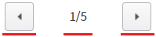
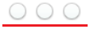

속성 'pagingType' 설정 값 비교 예제입니다. 이 속성을 통해 페이지를 표시하는 UI 유형을 지정할 수 있습니다.
설정 값에 따른 동작은 다음과 같습니다.
"1" : [default] 버튼 + 현재페이지/토탈페이지 + 버튼으로 화면에 구성됩니다.
"2" : 이미지로 화면에 구성됩니다. 모바일 화면에서 주로 사용됩니다.
페이지 유형을 버튼과 페이지 숫자로 구성하기
페이지 유형을 이미지로 구성하기
STEP 1. 실행된 결과를 확인합니다.
예제 영역 [(기본 설정) 페이지 유형을 버튼과 페이지 숫자로 구성하기]의 'PageControl'를 확인합니다.버튼과 페이지 숫자로 화면에 구성됩니다.
그림 1.브라우저(Chrome) 실행 예시

STEP 1. 실행된 결과를 확인합니다.
예제 영역 [페이지 유형을 이미지로 구성하기]의 'PageControl'를 확인합니다.이미지로 화면에 구성됩니다. 페이지 정보는 표시되지 않습니다.
그림 2.브라우저(Chrome) 실행 예시

속성을 정의합니다.
[필수] pagingType="설정 값"
(설정 값)
- "1": [default] 버튼과 페이지 숫자로 화면을 구성합니다.
- "2": 이미지로 화면을 구성합니다.
예시) pagingType="1"
pagingType